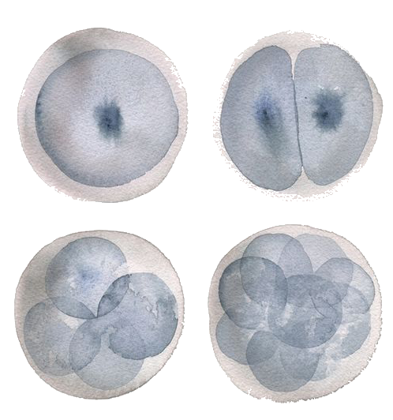
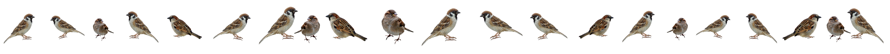

网络迷因[Memes]是一种文化现象，往往承载着特定的视觉符号、文字信息或深层概念
Memes are cultural phenomena that often carry specific visual symbols, text messages, or deep concepts
太阳辐射被挡住，大气层高处的电离层发生微弱的变化
Solar radiation is blocked, and the ionosphere, high in the atmosphere, changes slightly
食甚是太阳被月亮遮去最多的时刻，是电磁波信号最不稳定的时候
The eclipse is the moment when the sun is most obscured by the moon, and the electromagnetic wave signal is the most unstable
光信号传播，脉冲光在高纯度玻璃纤维介质里传播，速度为20万km/s
The light signal propagates, pulsed light propagates in a high-purity glass fiber medium at a speed of 200,000 km/s
一个超越所有文化和意识的共同基底
A common ground that transcends all cultures and consciences
 m
o
r
e
a
b
o
u
t
m
e